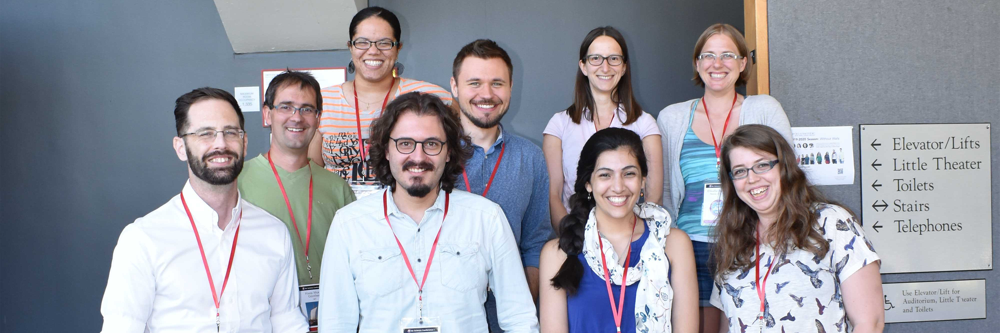
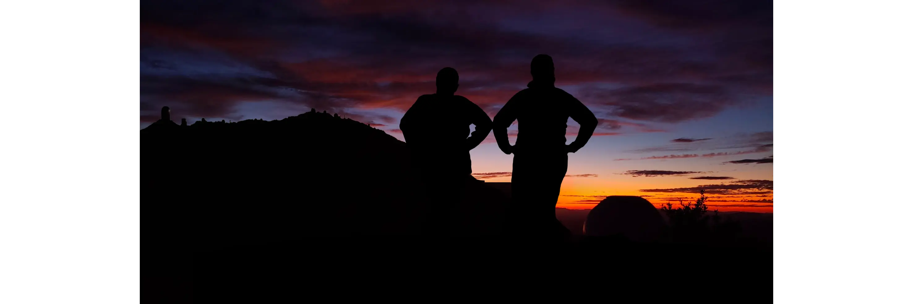

- Hi! My name is Aylin García Soto, I was born in Dominican Republic but have been a citizen in the US since 2007, so I'm fluent in both Spanish and English.
- I am a 7th year graduate student at Dartmouth College. I am both a research assistant and teaching assitant and have won two awards on TA'ing and received an honorable mention for the NSF GFRP.
- I've fist-authored three papers and am currently writing a fourth (planned for a fifth?). Read more about these projects in here
- With every research experience I've had, I've either operated a telescope or worked for one (i.e. MIT/TESS - Pictured above).
Fun Facts!
- While I'm not Turkish, my first name is of Turkish origin and it means "moon halo" or "belongs to the moon" (how apt).
- If I had my father's second last name (Garcia Nova), I would have been Aylin Nova Soto.
- I was in jazz band all through high school and so I love playing the guitar. I love every genre of everything except heavy metal music (sorry friends), but I love sci-fi media like Three Body Problem (show, currently reading the books!)
- I am proficient in photoshop, so if you need me to photoshop something whether funny or scientific, contact me.
- Exhibit A: Steph and Katie at MDM.

- Exhibit B : I made the icon of this website!
- Pop Quiz! What are the streaks?
- I learned how to drive in graduate school so beware (no I'm just kidding, I passed...the second time)
- I recently have taken up painting for fun (well... "fun" is arguable, since I have zero patience in waiting for it to dry).